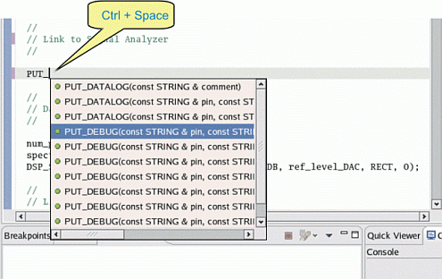

Working with Content Assist
You can also use the Content Assist to enter the API statements into the Editor view. The entered API statement is a template that does not have any parameter settings.
- In the Editor view, type at least the first letter of an API statement, and then press
Ctrl+Space.
A list displays the candidates followed by the elements that start with the letter combination you typed.

- Do one of the following:
- Continue typing. The list shortens. When there is only one item in the list, it is automatically inserted.
- Double-click an item in the list to insert it into your code.
- Press Esc to close the Content Assist window.
A period (.) triggers to open the content assist box as default. You can arrange a variety of preferences including this default setting in the Preference window for the content assist (). It is useful when you enter any test method API statement. For example, if you want to enter the statement "Analog.AWG("Aout").vOffset(5 V)", the content assist box opens to show the next candidates when you enter a period after entering "Analog" or "AWG("Aout")".
And also, for a parameter that has "TM::"-type candidates in a test method API, if you place the insertion cursor to the parameter position and then press Ctrl+Space, the content assist box can show the parameter candidates. For example, you can use this for the first and third parameters for the LIMIT API. In this case, the content assist box shows TM::LE, TM::LT, and TM::NA for the first parameter and the TM::GE, TM::GT, and TM::NA for the third parameter.